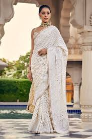

An eminent geographical indication, chikankari saree find their home in the state of Uttar pradesh.
Chikankari is a traditional embroidery style that originated in Lucknow, India, over 100 years ago. The word "Chikankari" comes from the Persian word "Chikan," which means embroidery. The style is known for its delicate and intricate designs, which often use floral patterns and creepers. Chikankari is often used to decorate sarees, suits, and other traditional clothing.
Chikankari sarees are made through a process of block printing, embroidery, washing, and finishing. The block printing process, also called "chhapayi", involves using a wooden block dipped in a color solution of glue and indigo dye to print a design onto plain fabric. The embroiderer then uses a thin, white cotton thread to create small stitches that form the designs. The finished piece is washed to remove all traces of the printed pattern, and the fabric is pressed to soften it. The saree may then be dyed with natural dyes, and finished with iron work
